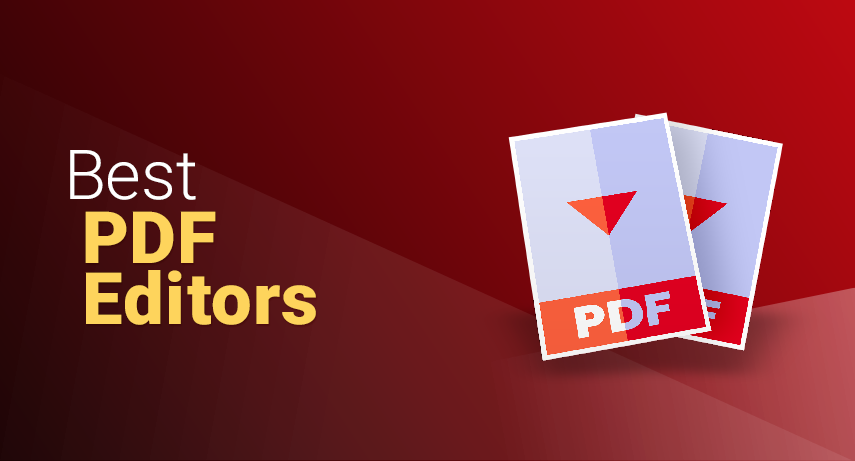
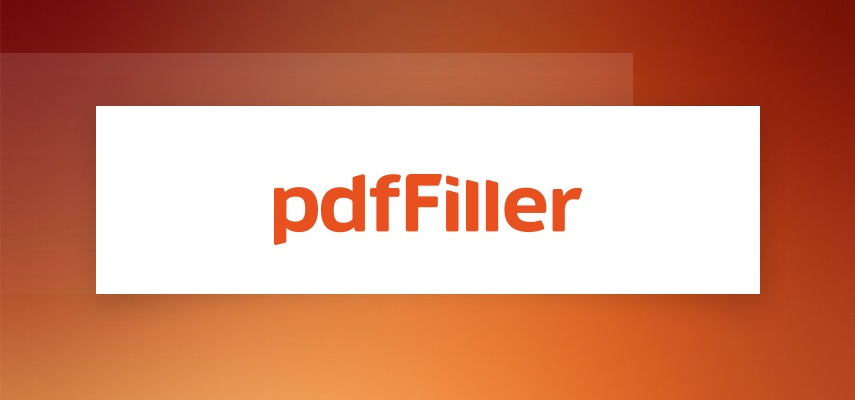
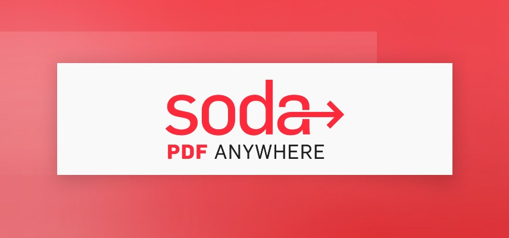

Top PDF Editors
Josephine Nguyen | Updated on February 8th 2024Content Manager & Graphic Design Specialist In a hurry? Here’s the top PDF Editor for 2025:
Work faster and more efficiently with these leading PDF editors.
Did you know that nearly 9 out of 10 employees feel like they're wasting precious hours at work? It's not just the usual workplace time-wasters like chatting with coworkers, snack breaks, smartphones, and other online distractions. According to a survey conducted by Kronos Incorporated, about 86% of employees complain of losing time doing unrelated tasks and administrative work. We're talking superfluous meetings, "quick catch-ups," team bonding, and wading through irrelevant emails. Here are a few more things that are subtly killing workplace productivity:
- Paper jams and other printer-related technical issues
- Walking back and forth to the scanner, printer, and fax machine
- Chasing your boss, clients, or customers for approval or signatures
- Locating documents, physically and digitally
- Copying, pasting, and retyping information
- Entering data into a spreadsheet
- Emailing documents back and forth with team members
- Filling out manual timesheets, health forms, and more
- Creating fancy reports or presentations from scratch
- Searching for a PDF file converter
- Sharing files or collecting feedback
We can go on and on. It's not just the sneaky time culprits either. Say, for example, that your coworker received a PDF file that needs to be altered or edited in some way. More than likely, they will proceed to print it out, mark it up, do the necessary corrections, scan it again, and send it off to its final destination. Sounds tedious, right?
That's not the only problem, though. Imagine if that document contains sensitive information, and it gets lost, left behind, or falls into the wrong hands. You or the entire company might have to deal with fraud, misuse of data, or identity theft. Doing things this way also means there is no trackable workflow and thus no accountability. When that document gets passed around, there is no way of telling what edits were made, who made it, and when.
This is where a PDF editor comes in handy. Most PDF editors come with powerful features that go beyond merely letting you edit text or add images. Decent PDF editors utilize OCR technology that converts image-based files into editable documents. Yes, documents scanned from books, brochures, magazines, and other text-based sources such as invoices and tickets. Amazing, right? Having a PDF editor in the workplace (or at home!) can help improve your digital workflow, reduce paper waste, cut down on unnecessary tasks, boosts security and privacy, and more!
An overview of the best PDF Editors for 2025:
- 🥇 1. Pdffiller — Our #1 recommendation and voted as the best PDF Editor for 2025. Boasts of a sleek and modern interface that requires almost no learning curve. Perfect for small and large teams, it excels in anything PDF-related — create, edit, convert, sign, and more!
- 🥈 2. Soda PDF — Designed with small to medium-sized businesses in mind, this all-in-one PDF solution offers a perpetual license!
- 🥉 3. PDF Suite — The budget-friendly PDF editor, PDF Suite makes editing, creating, and securely sharing documents easy and affordable.
- Frequently Asked Questions about PDF Editors (FAQ).
How can a PDF editor help in the workplace?
- It helps you get signatures faster. Gone are the days when an employee had to wait outside of someone's office for a signature, only to find out that the document you sent a week ago got buried under stacks of papers. Using a PDF editor, you can now capture signatures quickly and easily, even if they're out of the office!
- Modify a PDF file. How many times have you received a PDF that requires some modification? With a PDF editor, you can easily modify the text, correct typos, add a new paragraph, notes, or comments, change the font size, fix line spacing, and more!
- Convert and compress PDF files quickly and easily. Do you find converting a PDF into a different file format time-consuming? Have you or one of your employees ever spent hours looking for a way to compress large PDFs so it's easier to share? With a PDF editor, this task can be done in a matter of minutes. You can convert your PDF files into Microsoft Word, Excel, PowerPoint, or the other way around. You can also compress your PDF to save on disk space and for faster uploads and downloads.
- You can merge files for proper file management. Now you never have to waste valuable time looking for missing files. You can merge files into a single PDF so you can search, index, and archive information in a more efficient manner. Go ahead and compile those little notes, projects, and reports. Add attachments to contracts, invoices, legal documents, and more!
- Create PDF portfolios. Did you know that you can combine different media files into a single PDF? Yup. Video files, audio files, and even Flash documents depending on your PDF editor. Think of it as a file folder on your computer! This is an excellent feature for banks, real estate businesses, law firms, and just about every company -small or large.
- Create presentations and reports like a pro. By merging or combining files, you can create professional-looking reports and presentations. Convert your files into a PDF - Excel spreadsheets, banners, text, pie charts, graphic images, etc. Insert rich media files like audio and video, rearrange everything as you see fit, and convert into a sleek PowerPoint.
- It allows remote team collaboration. A PDF editor makes it possible to collaborate on a project even if some team members are located halfway across the world. It's great news for those on a hybrid work model or who have permanently opted to work from home. With the right PDF editor, team members can view, edit, and share PDFs, view changes that have been made, see who made those changes, and respond to them with comments. In short, everyone will be on the same page simultaneously without needing to be in the same room!
- Boost security within the company. Premium PDF editors offer features such as encryption, password protection, permission setting, and content redaction to limit confidential information to only those employees who have a "need to know." It also prevents the risk of exposing sensitive information like your personal identification numbers or date of birth.
Very cool. So now you know how you and your company can benefit from a PDF editor, let’s take an in-depth look at the top PDF services in 2025:
1. Pdffiller — Best for Form-building and E-signing

One of the key highlights of pdfFiller is its impressive template and form creation capability, tailored to serve a diverse array of industries. What truly sets it apart is the access it grants you to an extensive online library filled with customizable templates. Think of it as a search engine designed exclusively for various document types. These templates offer incredible flexibility, allowing you to make comprehensive edits, incorporate fillable fields, and even seamlessly integrate multimedia elements, making pdfFiller an exceptionally versatile tool in your hands.
When it comes to document editing, pdfFiller excels by providing you with a seamless platform for direct modifications to your PDF documents. Whether you need to add, delete, or rearrange pages, merge multiple PDFs into a single file, or refine text, images, and formatting within a PDF, pdfFiller equips you with the necessary tools to do so efficiently. The platform further simplifies your workflow with its data extraction tools, which enable you to effortlessly capture and export data from completed forms in a variety of formats, including Excel and CSV.
Recognizing the importance of mobility in today's fast-paced world, pdfFiller extends its capabilities to mobile devices with dedicated apps for both iOS and Android. This means you can access and work on your documents even while on the move, ensuring flexibility and convenience. But that's not all! pdfFiller goes above and beyond by offering additional functionalities such as SignNow, a comprehensive electronic signature solution. Moreover, it empowers you to transform static PDFs into interactive, fillable forms, adding text, checkboxes, radio buttons, drop-down lists, and other form elements. For those looking to leave a professional mark, pdfFiller allows organizations to incorporate company logos into PDFs and signature requests, enhancing recognition.
This is our top pick, but you don't have to take our word for it. pdfFiller offers a generous 30-day trial, giving you a chance to explore its essential features and see if it fits your needs. While it may be overkill if you only need to fill and sign a single form, it shines for those who regularly work with forms, offering a smooth interface, advanced features, and extensibility you won't find in free apps. It's a smart choice for those seeking a versatile and efficient document management solution.
Get Pdffiller - Manage, Edit & Create Beautiful PDFs!
2. Soda PDF — Lots of functions & Best value for money

Soda PDF is a neat PDF solution accessible from desktops, laptops, mobile phones, and tablets. Available as both a desktop and a web-based app, it has a sleek and modern interface that's easy to use, even for those with little to no formal training. Soda PDF also integrates into multiple cloud storage spaces like OneDrive, Google Drive, Dropbox, and Box. Whether you're working from home or on the road, Soda PDF ensures that you or your team can access essential documents for uninterrupted work.
Soda PDF has two plans: Standard and Pro. The former includes all the basics you've come to expect from a decent PDF editor. You can view, create, edit, convert, merge, or split PDFs. Frankly, we don't really see the point in paying for a Standard plan. You see, you can open up a slew of features by adding roughly $3 more for the Pro plan. With the premium plan, you can comment, annotate, or secure your PDFs with redaction, passwords, permission levels, digital signatures, and more. Add or create personalized forms, buttons, or checkboxes. The Soda PDF Online Pro plan also offers OCR and E-Sign functionalities. Create templates, prepare contracts, add your signature, and send it. You can even set reminders for signees and track signatures in real-time!
We honestly have no complaints about this application. It offers premium features at a lower price point. Despite offering a full suite of services, the software is easy to use regardless of your device. It's easy to master even without extensive training, which is great for small and medium-sized companies.
Get Soda PDF - Manage, Edit & Create Beautiful PDFs!
3. PDF Suite — The Budget Option
A user-friendly interface and reasonable price points are the main selling points of PDF Suite. The layout is reminiscent of Microsoft Word's, so there's no steep learning curve even for first-time PDF users. The software itself is lightweight, yet it boasts a wide range of PDF-related functionalities. Casual users will find the Standard plan sufficient. You can read, create, edit and convert PDFs, add bookmarks, or export them into a Word document.
If you often work with PDF documents, signing up for the Professional plan is a no-brainer. With it, you can create personalized forms or add watermarks, digital signatures, text fields, numerical fields, checkboxes, or radio buttons. Some features are obviously designed with the work environment in mind. Pro users can protect documents, set permission levels, or use the whiteout or redaction feature to erase content or hide sensitive, confidential, or personally-identifying information. You probably won't need OCR functionality to transform scanned documents and images into editable PDFs, but if you do, it's available with PDF Suite's Pro + OCR plan.
PDF Suite has exceeded our expectations as it turns out to be as good as the alternatives but doesn't cost as much. We liked how easy it is to work with forms — create, edit, or even add functional buttons. It works with all formats, and you can even optimize your files for mobile devices!
Get PDF Suite - Manage, Edit & Create Beautiful PDFs!
How we tested the Top PDF Editors for 2025?
Not all PDF editors are created equal, and with so many choices out there, choosing the best one can be pretty overwhelming, to say the least. Our experts will help narrow down your options with carefully curated recommendations gathered after testing apps with different types of files: text-based, image-based, small and large files, those that contain rich-media files in various formats, and more. Before a brand makes it into our Top 10 list, it must meet the following requirements:
- Allows content editing within the PDF document
- It lets the user create, convert, and export PDFs in a range of formats
- Offer features that make collaboration possible
- Equipped with an OCR engine to make PDF text editable and searchable
- Offers mobile support
- Fast and secure
Top PDF Editors - Frequently Asked Questions (FAQ)
❓ Are PDF readers and PDF editors the same?
Not quite. Going by the name itself, a PDF reader allows you to read or view a PDF file like you would a book. Some PDF readers like Adobe Acrobat, however, will let you do a little more than reading. You can print, sign, and leave comments, but that's pretty much about it. On the other hand, PDF editors are more advanced with features like cloud storage, automatic form-filling, eSigning, and more.
📂 Do I really need a paid PDF editor?
Not necessarily. It really depends on what sort of changes you need to make with the document. If it's just a one-time thing and all you need to do is annotate or add a comment, there's no need for a paid service. Plenty of free apps or websites will let you do just that. Bear in mind, though, that most free online editors have file-size and page-volume restrictions and will also leave an unsightly watermark on your document.
💻 Can I edit PDF files offline?
Yes! You can edit PDFs offline or online. You just have to launch your PDF editor, open the file you wish to edit, and make your desired changes. However, you will need to connect to the internet to send or share the file.
📱 Can I edit PDFs on my phone?
Of course, PDF editors like Soda PDF allow you to access and edit your files on the go. While some PDF editors do not offer dedicated apps, you can work with your file through the web browser.
Transparency and Trust: The aim of this website is to help you find the perfect software for your needs in an easy-to-view comparison list. You can read more about how we review and about our background in the About Us section of this website. Software.fish does not feature all of the software available in the market, we cherry-pick what we consider to be the leaders in each vertical. We try to keep this site updated and fresh, but cannot guarantee the accuracy of the information as well as the prices featured at all times. All prices quoted on this site are based on USD so there could be slight discrepancies due to currency fluctuations. Although the site is free to use, we do earn commissions from the software companies that we have partnered with. If you click on one of our links and then make a purchase, we will get paid by that company. This has an impact on the ranking, score, and order in which the software is presented in our list and elsewhere throughout the site. Software listings on this page DO NOT imply endorsement.